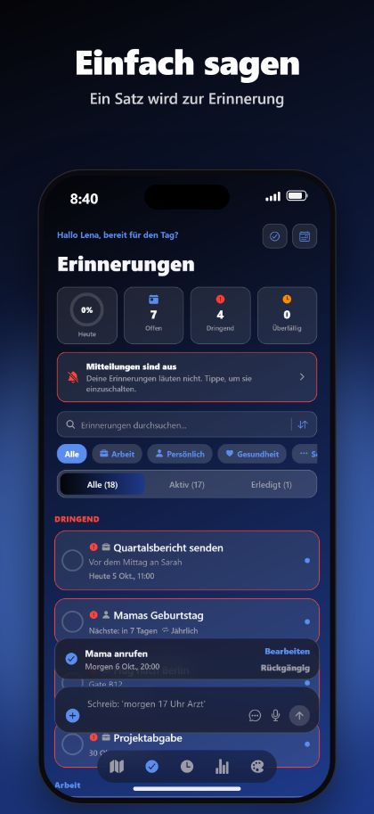
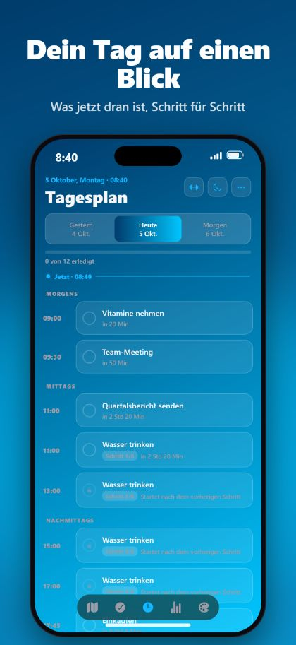
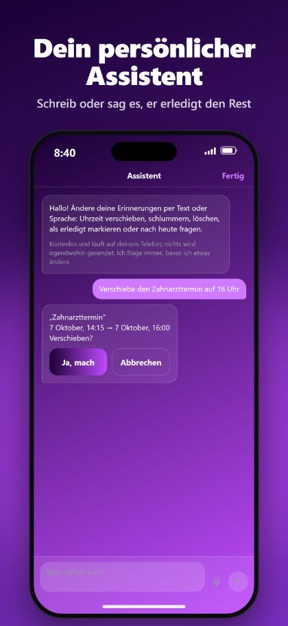

Freihändig mit Siri
Sag „Hey Siri, füge eine Erinnerung mit RemindMe hinzu“. Siri fragt nach Tag und Uhrzeit und speichert sie, ohne die App zu öffnen.
RemindMe macht aus einem getippten oder gesprochenen Satz eine Erinnerung mit dem richtigen Datum, der richtigen Uhrzeit und Wiederholung. Ohne Menüs, ohne Formulare.
Kostenlos für iPhone und iPad. Kein Konto, keine Werbung.



Mama morgen um 20 Uhr anrufenMama anrufen · morgen, 20:00 Uhr
Tabletten jeden Tag um 9 und 21 Uhr nehmenTabletten nehmen · täglich, 9:00 und 21:00 Uhr
Alle 2 Stunden Wasser trinken, zwischen 9 und 21 UhrWasser trinken · alle 2 Stunden, 9:00 bis 21:00 Uhr
Wecker morgen um 6:30 UhrWecker · morgen, 6:30 Uhr
Sag „Hey Siri, füge eine Erinnerung mit RemindMe hinzu“. Siri fragt nach Tag und Uhrzeit und speichert sie, ohne die App zu öffnen.
Mit iOS 26 kann eine Erinnerung wie ein echter Wecker klingeln, auch im Lautlos-Modus oder in einem Fokus.
Setze einen Ort auf die Karte und werde erinnert, wenn du ankommst oder gehst, auch bei geschlossener App.
Ein Tagesplan mit nur dem, was heute noch offen ist, dazu Kalender, Serien und Schlummern.
Kein Konto. Keine Werbung. Kein Tracking. Deine Erinnerungen bleiben auf deinem iPhone und iPad.
Ein großzügiges Layout für große Bildschirme, jede Ausrichtung, Split View, Widgets und schöne Designs.
RemindMe ist eine Erinnerungs-App für iPhone und iPad. Du tippst oder sagst einen Satz, und die App legt eine Erinnerung mit dem richtigen Datum, der richtigen Uhrzeit und Wiederholung an.
RemindMe ist kostenlos ladbar und enthält keine Werbung.
Nein. Es gibt kein Konto und keine Anmeldung. Deine Erinnerungen bleiben auf deinem Gerät.
Ja. Sag „Hey Siri, füge eine Erinnerung mit RemindMe hinzu“. Siri fragt nach Tag und Uhrzeit und speichert die Erinnerung, ohne die App zu öffnen. „Detaillierte Erinnerung hinzufügen“ und „Orts-Erinnerung hinzufügen“ funktionieren auch.
Mit iOS 26 und neuer, ja. RemindMe kann einen echten Wecker stellen, der auch im Lautlos-Modus oder in einem Fokus klingelt.
Türkisch, Englisch, Französisch, Deutsch und Arabisch, auch lange Sätze und mehrere Erinnerungen auf einmal.
Ja. Kein Konto, keine Werbung, kein Tracking, und deine Erinnerungen bleiben auf deinem Gerät.